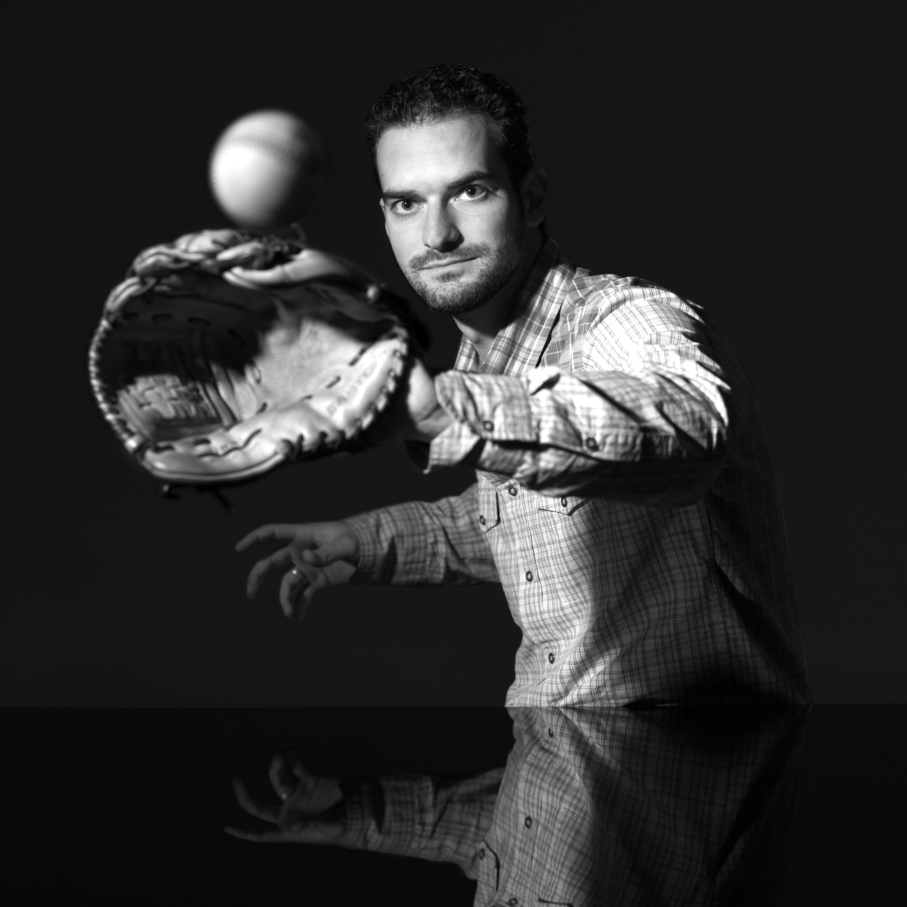
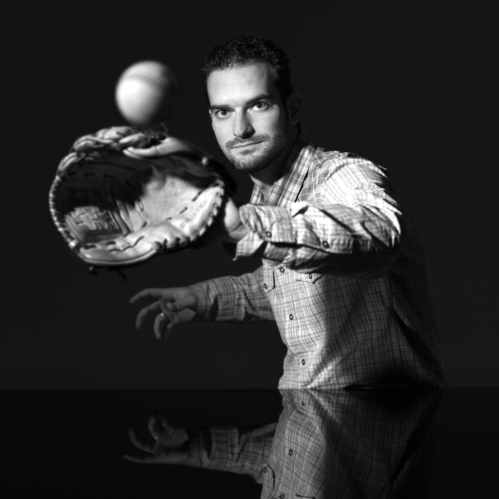

- Home
- Photography
|
|
Graphic Design|
About|
ContactWelkom
“You don't make a photograph just with a camera. You bring to the act of photography all the pictures you have seen, the books you have read, the music you have heard, the people you have loved.”
― Ansel Adams
Fotografie
Portrait


 


Other


Graphic design


About
Zoals iedereen, kwam ik ook voor de keuze te staan. Wat wil ik later worden? Op mijn 16e was ik klaar met mijn middelbare school en begon aan een opleiding fotografie. Dit pakte goed uit en vier jaar later stond ik buiten met een professioneel diploma op zak.
In deze vier jaar heb ik veel ervaringen op gedaan. Zowel grote projecten als drie verschillende stages.
Fotografie en Grafisch Design zijn voor mij iets heel persoonlijks en iedereen heeft een eigen stijl. Daarom is persoonlijk contact heel belangrijk, om te kunnen inschatten wat de klant wil.
Bent u benieuwd wat ik voor u kan betekenen? Neem dan gerust contact met mij op!
In deze vier jaar heb ik veel ervaringen op gedaan. Zowel grote projecten als drie verschillende stages.
Fotografie en Grafisch Design zijn voor mij iets heel persoonlijks en iedereen heeft een eigen stijl. Daarom is persoonlijk contact heel belangrijk, om te kunnen inschatten wat de klant wil.
Bent u benieuwd wat ik voor u kan betekenen? Neem dan gerust contact met mij op!
Contact
Post: Hanne van Herwijnen
Nationalestraat 120, bus 3
2000 Antwerpen
Telefoon: +32/4 8329 4340
E-mail: graphic@vanherwijnen.com